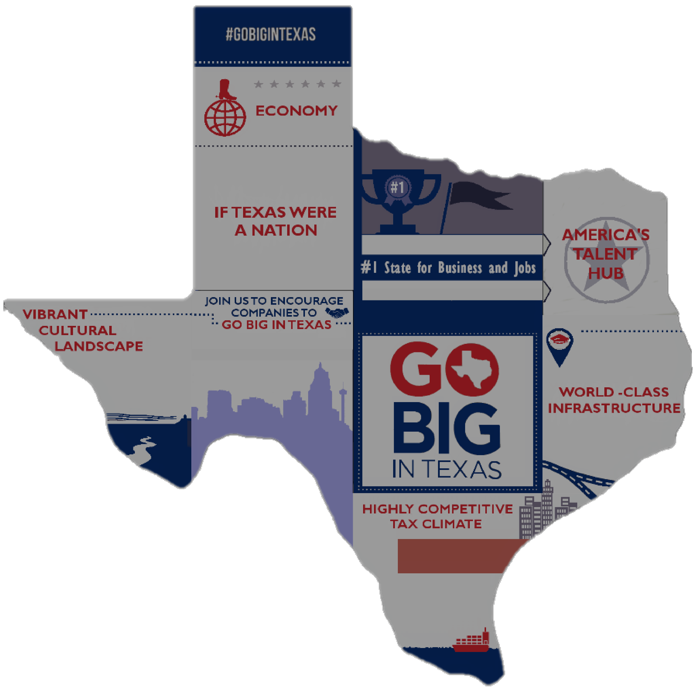
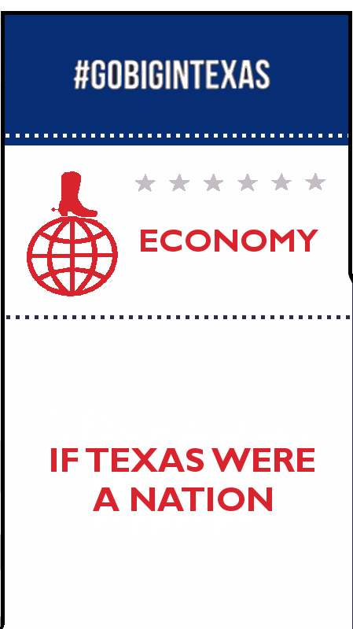

America's Talent Hub
Texas cities, large and small, continue to attract millennials, families and entrepreneurs. It's no wonder Forbes recently declared that "when it comes to attracting skilled talent, it's Texas and then everybody else."
✖
Vibrant Cultural landscape
"Night and day." That's how one CEO described the difference
betoween Silicon Valley and his new Texas headquarters. In
Texas, employeres and talent alike enjoy low taxes, a low
cost of housing and high quality education coupled
with a vast range of recreational opportunites. Texas
offers the best of city and country lifestyles and
each city has something unique to offer.
✖
Join us to Encourage Companies to |
Go Big in Texas
Texas Economic Development Corporation (TxEDC) is on the front
lines of Texas' economic development and marketing success. Along
with the Governor's Office of Economic Development and Tourism
(EDT), these two highly focused organizations make up the cornerstone
of
Governor Greg Abbott's economic development agenda.
As an independently funded and operated 501(c)(3) nonprofit
organization, TxEDC is made possible through the strong support
of our stat's top ecomomic development organizations innovative
companies and privately-held enterprises. Through a robust program
of national and international investment attraction missions, industry
events, media relations and advertising, TxEDC spreads the word
of Texas' business advantages among a target audience of corporation
decision makers and site selection consultants to let them know they
can Go Big In Texas.
✖
The Governor's University Research Initiative (GURI)
promises to keep Texas competitive from a workforce and research perspective. The grant matching program helps Texas higer education institutions recruit distinguished researchers.
promises to keep Texas competitive from a workforce and research perspective. The grant matching program helps Texas higer education institutions recruit distinguished researchers.
World-Class Infrastructure
Texas' central location and state-of-the-art transportation network provide timely access to domestic and global markets via air, land and sea.
✖
Highly Competitive Tax Climate
Less government, lower taxes, smarter regulations and right-to-work laws are the economic policies attracting employers to Texas from states that over-tax and over-regulate. Unlike other states, at the state level, Texas has:
The Texas Enterprise Fund (TEF) is one of the most competitive deal-closing incentive programs in the nation. Since 2004, the TEF has awarded 150+ grants totaling more than $600 million across a wide variety of industries and projects.
✖